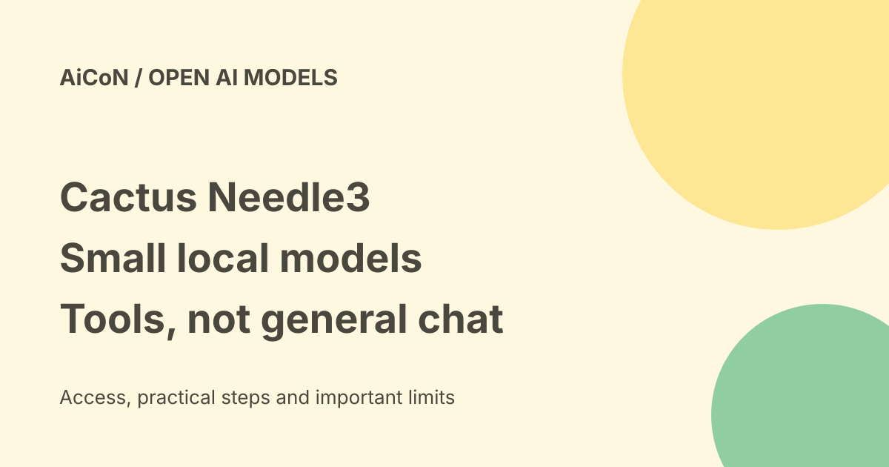

Cactus Needle 3: tiny local tool-calling model, with device limits
Needle 3 is a small model built for choosing app tools, extracting structured fields and local text search. It trades general conversation for those narrow jobs. An 8-29 MB model file is not a promise that every phone or microcontroller can run your full application.

Three main jobs
- Tool calling: your app exposes functions, and the model proposes a function and its arguments.
- Structured extraction: turn text such as an invoice or form into fields matching a developer's schema.
- Text embedding: create a numerical representation of a sentence for local search or matching.
A tool call is a proposed action for your software to handle. It is not proof that a user permitted that action. Typed output and a parsing grammar help produce valid structure, but cannot prove the values are correct.
Size and performance claims
Cactus describes 8-29 MB deployed files across smaller and deeper variants. The model card explains selectable depths from 2 to 20 layers, compressed weights and separate platform engines. The weight-file size does not include your application, all memory used while running, a speech model, extra assets or device-specific overhead.
Cactus says it beats models ten times its size on mobile tool calls and matches models two to three times larger on extraction. These are vendor benchmark claims on specified tasks, not an independent all-purpose ranking. It is deliberately not a general chat replacement. Test your own functions and language before relying on it.
Local operation, first downloads and speech
The model card says the package downloads the engine and weights once, then caches them. Running a local model can avoid sending inference text to a cloud model service. Initial downloads still need internet, and a tool that calls a website, account or API can still send data outside the device.
The current GitHub README also describes Whistle speech-to-text sharing its container and engine. That is an additional route, not evidence that the base 8-29 MB file contains every speech component or supports every language. We did not verify Malayalam, audio accuracy or a specific phone build.
Licence and costs
The checked source repository has an Apache 2.0 licence. The model card labels open weights and provides a checkpoint and runtime file. Check the actual files' licence and dependency notices when redistributing or building a product. An Apache code licence does not grant rights to third-party data you process.
Local software access is not a cloud-model bill, but hardware, power, integration, hosting for external tools and optional vendor services can cost money. The card describes a proprietary Cactus platform for parts of post-training and quantisation; do not assume every service is included free. We did not obtain an enterprise quote.
Confidence is not permission or certainty
The card describes a calibrated confidence score and empty function-call output when no exposed tool fits. A score estimates behavior on the maker's tested distribution; it cannot guarantee safety on your input. Set thresholds from your own tests, check arguments, and route uncertain cases to a person.
Never expose powerful functions just because the model is small or local. A local model can still call a destructive file operation or paid API if your application allows it. Use separate confirmation for payments, deletions, sensitive sharing and physical-device actions.
A bounded first test
- Read the source README, model card and platform guidance for your target.
- Choose a supported runtime and begin with synthetic text, not private records.
- Expose one harmless function with a clear name and narrow arguments.
- Inspect returned function calls and confidence without executing a real effect.
- Test ambiguous, off-topic and malformed requests.
- Measure actual RAM, latency and accuracy on your device before expanding access.
The official Python route uses the cactus-needle package. Verify package/source identity before installing. We did not install it, download model weights, run a benchmark or test a microcontroller.
India and practical fit
No India-specific account gate was stated in the checked public source/model pages. Downloads, platform engines, hardware and the languages you need still require testing. Small file size can help constrained devices, but does not establish compatibility with a particular board, operating system or memory budget.
Frequently asked questions
Is this a whole chatbot?
No. It targets narrow tool, extraction and embedding work.
Can it run fully offline?
Local inference can after setup, but connected tools and downloads have separate network needs.
Are typed results always right?
No. Valid format is not factual correctness.
What changed since the earlier post?
The 8-29 MB and local-task claims are attributed to the maker, with file-versus-runtime distinctions and the current speech route noted. Benchmark wins stay labelled vendor claims. This guide adds licence checks, cached downloads, permission gates and untested device/language limits.
Sources: Official model card · Source and licence · Project page. Checked 8 October 2026.